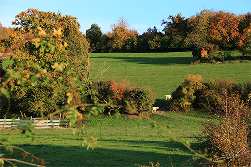

Chanson d'automne

Les sanglots longs
Des violons
De l'automne
Blessent mon coeur
D'une langueur
Monotone.
Tout suffocant
Et blême, quand
sonne l'heure,
Je me souviens
Des jours anciens
Et je pleure
Et je m'en vais
Au vent mauvais
Qui m'emport
Deçà, delà,
Pareil à la
Feuille morte.
Paul VERLAINE - Poèmes saturniens